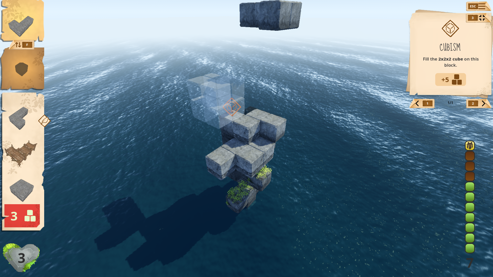

Tower of Genn

Description
Tower of Genn is a student project that I made with other UC Irvine students using the Godot game engine and gdscript. It is currently still in development, with plans for a steam release December of this year. The current version of the game can be played on itch.io.
The game is a light strategy-puzzle game, where players place blocks strategically to build their tower as high as possible while managing their resources.
Responsibilites
I am the programming lead on this project, responsible for:
- Organizing and Running Weekly Programmer Meetings
- Assigning Tasks to Programmers
- Managing the Github Repository
- Code Review
Additionally, I implemented some game features, including:
- Camera Movement and Controls
- Quest System
- In-game Message System
- Tutorial
Challenges
This is the first 3D video game that I have programmed. I have worked in 3D engines like Unity before, but only to create sprite based 2D games.
While working on Tower of Genn, I had to adjust to having an extra axis. This caused me some extra challenges when implementing the camera controls. Since the player is free to rotate the camera a full 360 degrees, the forward direction of the camera changes. This means that the controls have to account for the rotation of the camera to move the piece in the proper direction.
Code Samples and Development Pictures
The GitHub for this project is a private repository. However, I have included some of the code I worked on here:
This is the script for the Quest class. A Quest is a challenge attached to a specific block, giving the player a reward upon completion. The base class outlines information common to all types of Quests, and is utilized by other game systems to generate and track Quest information.